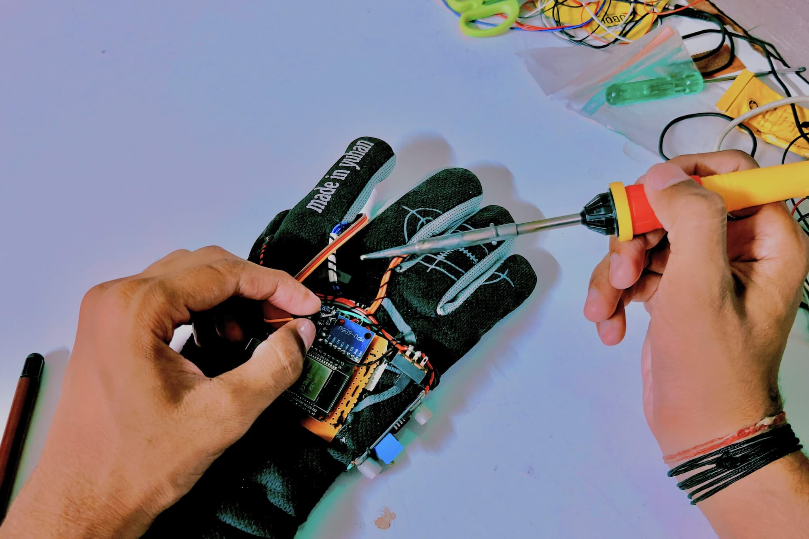

Wireless Gyro Air Mouse Glove
College Expo/Lab Project — Team Leader

A wireless air-mouse system using an ESP32 and gyroscope-based hand movement to control a computer cursor. Led the project team, designed and handled the physical hardware implementation, handled wiring, component arrangement, soldering and physical assembly, worked on hardware-side troubleshooting and integration, and coordinated with team members responsible for coding and presentation.